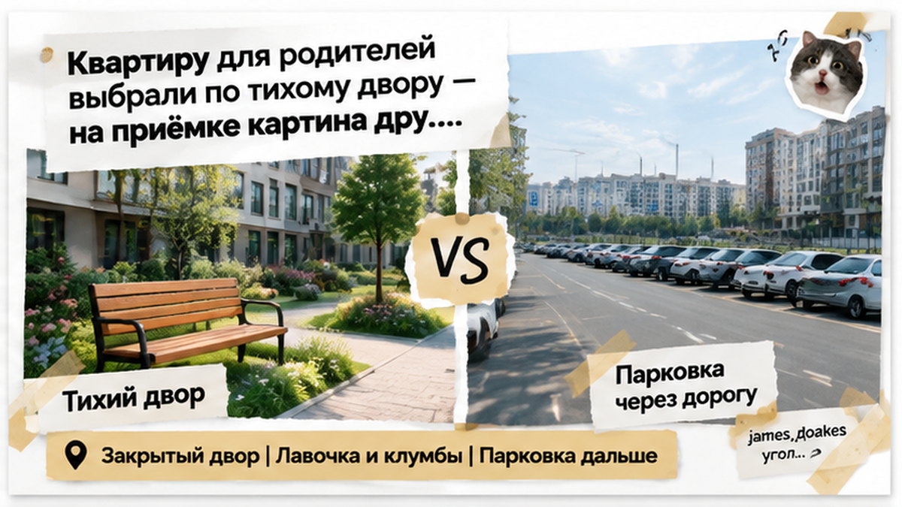
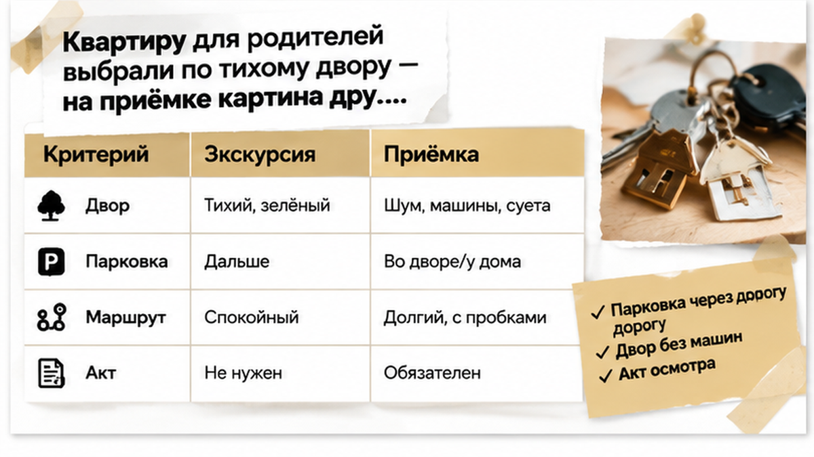
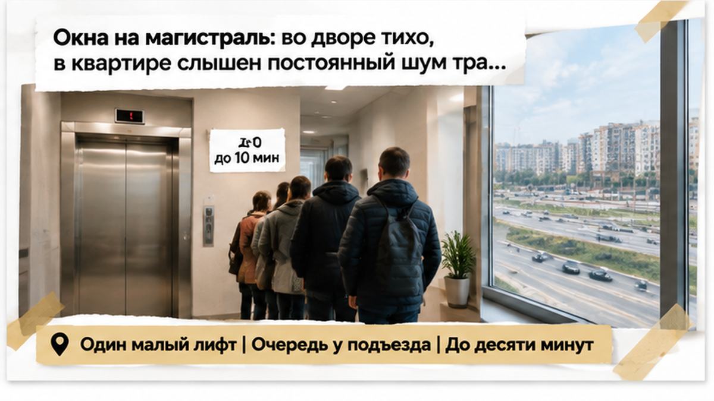
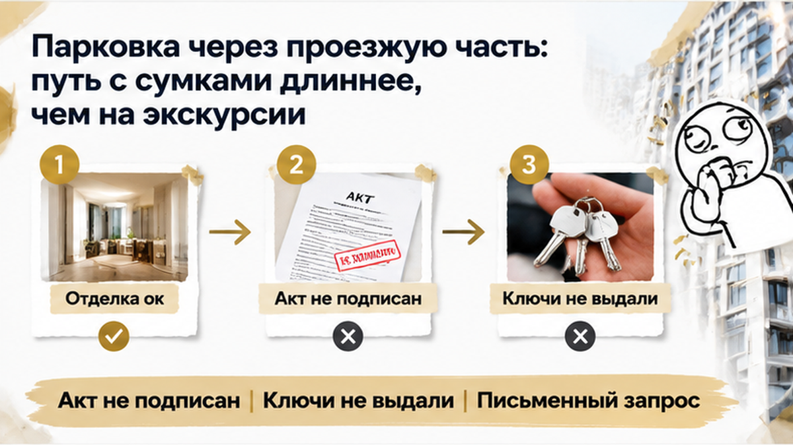
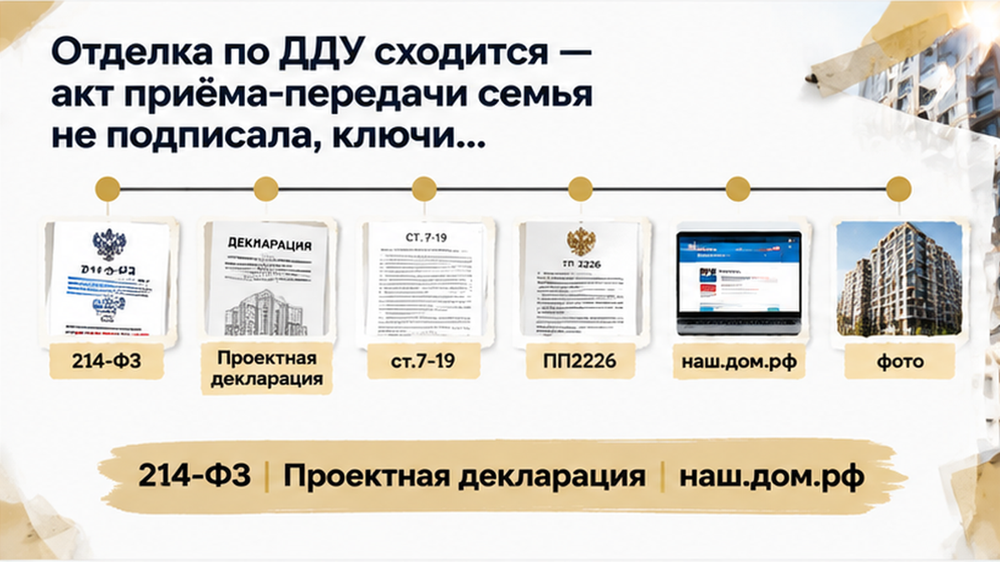
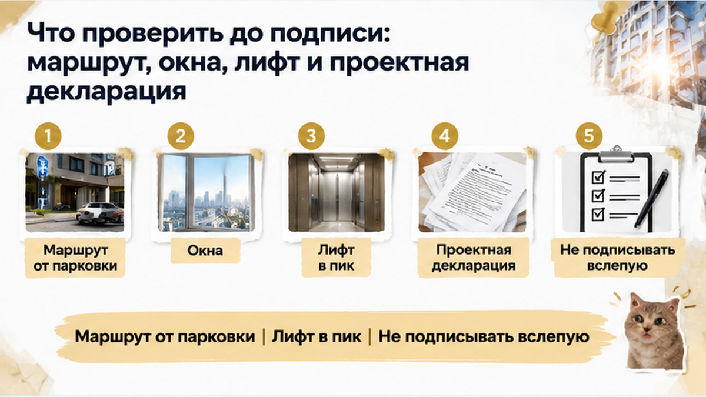

Родители 68–72 лет ждали ключи от новой квартиры, но на приёмке семья увидела совсем другой быт: до подъезда нужно переходить проезжую часть, окна выходят на магистраль, а лифт в часы пик приходится ждать до десяти минут. Акт на новостройку в Тюмени подписывать не стали. На экскурсии запомнились закрытый двор, лавочка и клумбы — место для спокойной жизни без машин под окнами. В день передачи выяснилось, что красивый двор и ежедневный маршрут родителей — не одно и то же. Для молодых это могло бы быть просто неудобством, а для пожилых людей такой путь способен решить, пригодна ли квартира для жизни вообще.
Я — Святослав Шакин, The Риэлтор в Тюмени. В Telegram разбираю такие истории без рекламного лоска, а в MAX показываю, что лучше проверить ещё до передачи ключей.

Дети искали квартиру не для себя. Родителям нужно было спокойно выйти в магазин, добраться до поликлиники, подняться домой и не зависеть от автомобиля на каждом маршруте. На экскурсии дом выглядел подходящим — закрытая территория, машины не стоят прямо под окнами. Потом застройщик сообщил о готовности, и семья приехала смотреть уже не презентацию, а конкретный подъезд, окна и дорогу домой.
Парковка оказалась дальше, чем представлялось. Между машиной и подъездом нужно было перейти проезжую часть. В доме работал один небольшой пассажирский лифт. А окна и балкон выходили не во двор, а в сторону магистрали.
Отделка при этом соответствовала приложению к ДДУ. Не было голых стен, другой планировки или подмены обещанного материала. Спор возник из-за другого: как проект дома будет работать в обычной жизни людей 68–72 лет.
Менеджер объяснил спокойно: «Парковка предусмотрена проектом. Лифт исправен. Окна требованиям соответствуют». Формально это могло быть так. Но семье нужно было понять, смогут ли родители пользоваться квартирой каждый день — с сумками, в гололёд, с шумом за окном и ожиданием у подъезда.

На экскурсии человек обычно идёт за менеджером и редко спрашивает, где остановится такси и как пройти от машины до подъезда в дождь или гололёд. Фраза «двор без машин» означает, что транспорт не ездит внутри дворовой территории, но не обещает парковку у входа.
Для этой семьи автомобиль нужен был прежде всего детям — они приезжают к родителям, привозят продукты, помогают с делами. Пока маршрут существовал только на картинке, расстояние казалось мелочью.
На месте появились проезжая часть, бордюры и необходимость дождаться безопасного момента для перехода. С пакетами дорога стала ещё длиннее. Для молодого покупателя это несколько лишних минут, для человека 68–72 лет — ежедневная нагрузка, которую нельзя убрать красивым описанием двора.
Удалённая парковка сама по себе ещё не означает существенный недостаток квартиры. Если отдельное машино-место не обещали в договоре, требовать его бесплатно нельзя. Проверять нужно проектную документацию и приложения к ДДУ, а не только рекламный рендер.
Семья сняла маршрут на фото и видео, внесла замечания в акт осмотра и попросила застройщика ответить письменно. Получилось не просто «нам далеко», а зафиксированный путь с конкретными препятствиями, которые можно сопоставить с документами.
Похожая ошибка бывает и со сроками передачи ключей: ожидание меняется уже после сдачи дома, а решать вопрос приходится быстро. В разборе о переносе ключей в тюменской новостройке важным оказался не рекламный срок, а то, что закреплено в документах. Здесь тоже сначала нужно сопоставить обещанное с ДДУ и проектом, а потом решать вопрос с актом и передачей ключей.

На экскурсии лифт проверяют машинально: нажали кнопку, поднялись на этаж — вроде бы всё работает. Но родители будут пользоваться подъездом утром и вечером, когда в дом одновременно заходят жильцы с сумками и колясками.
На приёмке лифт был исправен: двери закрывались, кабина ехала, остановки проходила. Вопрос оказался не в поломке, а в нагрузке. У входа собралась очередь, а в часы пик ожидание доходило примерно до десяти минут.
Для молодого человека это неприятная пауза. Для человека 68–72 лет это часть каждого маршрута: дойти до подъезда, постоять с пакетами, потом пройти до квартиры.
Один пассажирский лифт сам по себе не означает нарушение договора, если такое решение предусмотрено проектом. Но если в документах заявлялись другие характеристики, позиция покупателя будет сильнее. Семья записала время ожидания и сняла очередь на видео — не «нам тяжело», а конкретные минуты и количество людей у лифта.
Во время экскурсии семья стояла во дворе — там звук приглушался домами, и место запомнилось тихим. В квартире они открыли окна и услышали другую сторону дома: балкон и жилые комнаты выходили на магистраль. Это не резкий грохот, а постоянный поток машин утром, днём и вечером.
Открытое окно превращается в ежедневный выбор: проветривать квартиру или держать створки закрытыми. Для родителей такой вопрос может оказаться важнее цвета стен.
Запись на телефон сама по себе не доказывает превышение допустимого шума — для спора понадобятся замеры и документы специалиста, например протокол уполномоченной организации или заключение эксперта.
Вид на тихий двор не равен обещанию полной тишины в квартире. Нужно посмотреть, что закреплено в рекламе, проектной декларации и приложениях к ДДУ. Если там указаны «тихий двор» или особая шумоизоляция, эти материалы стоит сохранить ещё на этапе выбора, а не после конфликта на приёмке.

Явных дефектов отделки семья не обнаружила. Голых стен не было, планировка совпадала, покрытия соответствовали приложению к ДДУ. Но родители должны были жить здесь каждый день: дойти от парковки через проезжую часть, дождаться лифта, услышать магистраль при открытом окне.
На осмотре семья внесла в акт замечания по маршруту, лифту, стороне окон и шуму, приложила фото и видео и направила письменный запрос. Устное «потом что-нибудь решим» договорённостью не посчитали.
Акт приёма-передачи подписан не был, ключи семье не выдали. Для родителей это означало, что переехать «уже сейчас» не получится. Для взрослых детей — необходимость решать, что важнее: добиваться другого варианта или принимать квартиру с неудобствами, которые на экскурсии не были очевидны.
Отказ от акта не гарантирует замену квартиры. Застройщик может сослаться на проект, предложить другой этаж с доплатой или оставить вопрос без быстрого решения. Но и покупатель не обязан подписывать акт только потому, что закончился день приёмки — сначала нужно понять, есть ли в документах конкретное обещание, с которым расходится фактическая ситуация.

Проверять стоит проектную декларацию на наш.дом.рф, ДДУ и приложения к нему — сопоставить благоустройство, парковки и характеристики объекта с тем, что видно на площадке. Отдельное машино-место нельзя требовать бесплатно, если его не обещали в договоре.
С шумом доказательства сложнее: запись на телефон показывает проблему, но не заменяет замеры. Замечания лучше фиксировать сразу в акте осмотра, а не надеяться восстановить детали через несколько недель.
Вы бы отказались от ключей ради другой секции с доплатой или приняли квартиру несмотря на шум, лифт и парковку?

Для квартиры родителей приёмка начинается не у входной двери. Пройдите весь путь от парковки или места, где высадит такси, до подъезда. Посмотрите на расстояние, проезжую часть, бордюры, ступени и освещение. «Двор без машин» означает, что транспорт не ездит внутри двора, но не обещает парковку у самого подъезда.
Зайдите в ту квартиру, которую принимаете, и откройте её окна. Двор с экскурсии может быть с другой стороны дома. Полезно побыть внутри не только днём: поток машин утром и вечером бывает разным.
Лифт проверьте несколько раз. Одна поездка с менеджером показывает только исправность кабины, но не показывает, сколько жильцы ждут лифт в часы пик. Зафиксируйте и работу оборудования, и реальное время ожидания.
После осмотра сверьте с проектной декларацией и приложениями к ДДУ благоустройство, парковки, окна и другие характеристики. Рекламные скриншоты сохраните, но помните: красивое описание без конкретного обязательства не всегда даёт право требовать другую квартиру.
Замечания внесите письменно, добавьте фото и видео, запросите позицию застройщика. Не подписывайте акт с обещанием «разобраться позже», если это нигде не оформлено.
В разборе приёмки с голыми стенами вместо чистовой отделки доказательства строятся иначе. В материале о семейной ипотеке на новостройку проблема возникла на другом этапе, но вывод тот же: документы нельзя оставлять на потом.
Эта семья не стала делать вид, что неудобства исчезнут после переезда. До подписи они прошли маршрут, проверили окна, дождались лифта и запросили письменные ответы. Иногда самое разумное решение на приёмке — остановиться, пока не понятна цена каждого варианта. Акт не подписан, ключи не выданы — но у покупателей осталась возможность выбирать не по рендеру, а по реальной жизни родителей.